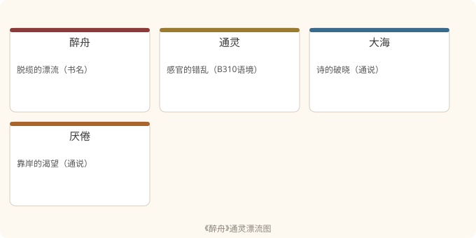

醉舟
一、基本信息
| 作者 | 阿尔蒂尔·兰波 |
|---|---|
| 成书/出版 | 1871年（Britannica B310：The Drunken Boat written 1871） Arthur Rimbaud — Encyclopaedia Britannica（百科全书） |
| 国别/地区 | 法国 |
| 时代 | 近代 · 19世纪70年代初 |
| 体裁 | 长诗 |
| 语言 | 法语 |

《醉舟》通灵漂流图（主题·结构图）
二、创作背景
Britannica（B310）：The Drunken Boat——1871年写。
Britannica（B310）：兰波——'气质的通灵者'说（通说待核——B310 口径）。
题材（通说待核）：脱缆之舟的漂流——'不可能的通灵'航程。
三、内容脉络
（通说待核）'醉舟'自述：脱缆顺流而下的通灵之旅。
（通说待核）'大海'与'诗的破晓'（不采为引文）。
四、主要人物表
| 人物 | 身份 | 说明 |
|---|---|---|
| 醉舟 | 叙述者 | （B310 书名意象） |
五、主题与艺术特点
- 通灵的漂流（B310 语境——通说待核）。
- '酒'与'诗'的boat（书名）。
- 破晓与厌倦（通说待核）。
六、影响与评论
- Britannica：The Drunken Boat written 1871（B310）。
Arthur Rimbaud — Encyclopaedia Britannica（百科全书） - Britannica：兰波为象征主义先声（B310 作者级——待核）。
Arthur Rimbaud — Encyclopaedia Britannica（百科全书）
七、阅读建议
难点
- 25行的'船'格律（通说待核）。
- 通灵论（Lettre du voyant说）背景。
- 《醉舟》中译本（人民文学等——通说待核）。
- 法文原版（公有领域）。
兰波诗歌首选；与《地狱一季》《彩画集》对读。
八、待核实
- 1871年写给魏尔伦说待核（通说）。
- '通灵者书信'（5月与8月）日期待核。
- 25节结构核对。